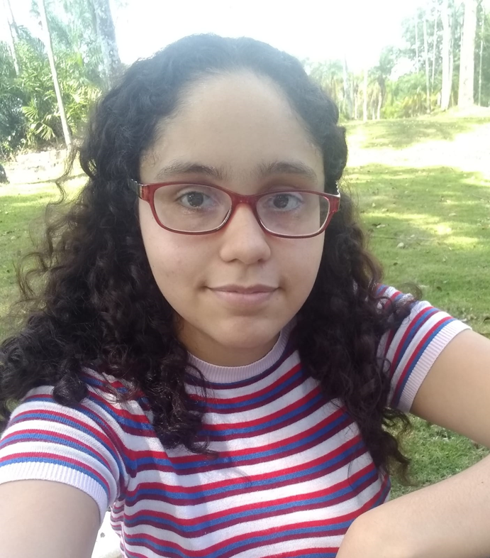

About Me

My name is Isabel Acevedo, and I am a 1st year international student from the Interactive Media Design program. I was born and raised in Santo Domingo, the capital of the Dominican Republic. However, I recently moved to OTT in order to fulfill my studies and experience a new culture and environment.
Prior to taking my current program, I took different courses in art, programming and English. In addition, I applied for small jobs during the summer. For instance, I worked in a summer camp for eight weeks. My favourite thing to do in class is interacting with my professor and classmates. It makes me feel more relaxed and confident.
"The past can hurt. But the way I see it, you can either run from it or learn from it."- The Lion King (1994)
My hobbies
- Drawing
- Play videogames
- Listening and watching musicals